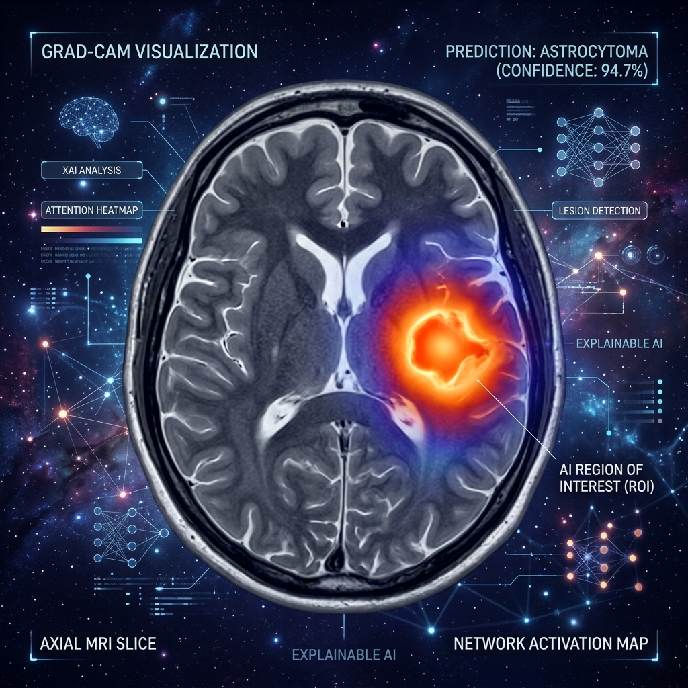
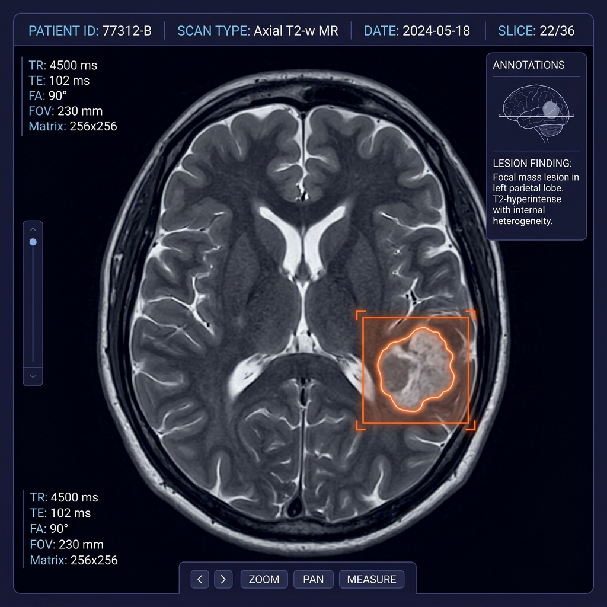
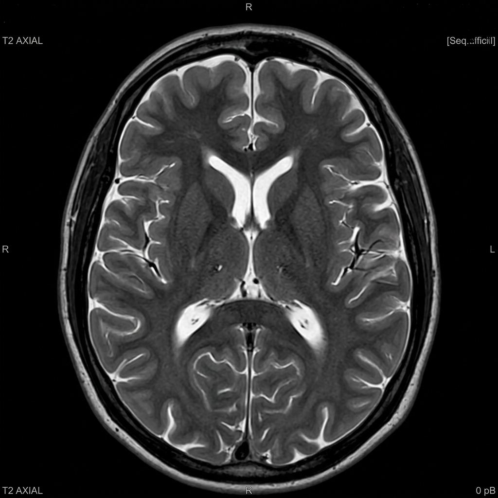

An uncertainty-aware, attention-guided decision support system for brain tumor classification, boundary delineation, and clinical verification.

Radiologists evaluate hundreds of MRI scans daily. Early-stage tumors are microscopic and diffuse. Standard AI provides opaque 'black-box' predictions that are clinically unusable. We changed that.
High accuracy numbers mean nothing if clinicians cannot inspect the neural decision pathway or verify diagnostic rationale.
NeuroScope-XAI maps spatial attention heatmaps to precise anatomical MRI coordinates, empowering instant radiologist audit.
A end-to-end pipeline designed for seamless neuro-radiology integration and high confidence diagnosis.
Automated skull-stripping & CLAHE contrast equalization. Removes non-brain artifact tissue while enhancing sub-voxel tumor edge details across heterogeneous scanner protocols.

EfficientNet-B0 + CBAM modules to focus on anomalous tissue. Dynamically recalibrates spatial and channel feature maps to capture subtle tumor boundaries.
Monte Carlo Dropout to flag ambiguous scans for senior review. Quantifies epistemic model variance so high-risk edge cases are auto-escalated.
Grad-CAM heatmaps proving exactly where the lesion is. Provides pixel-level attributions mapped over anatomical MRI sequences for rapid clinical validation.
Simulated diagnostic workflow housed in a sleek glassmorphic software UI container.

Experience our clinical decision support system live in action.